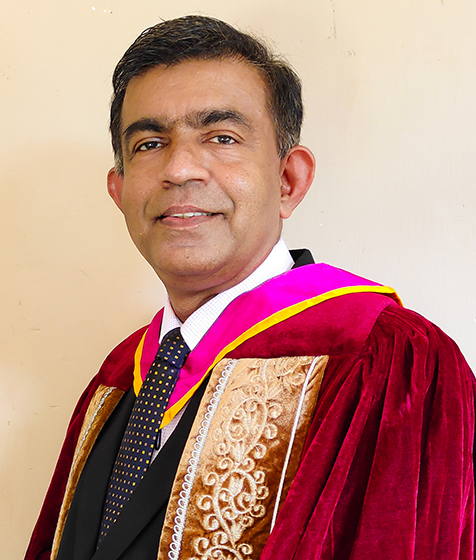

Our Speakers
Chief Guest
Prof. U. P. Nawagamumuwa
Department of Civil Engineering,
University of Moratuwa
Keynote Speaker

Dr. Ishara Dharmasena
Wolfson School of Mechanical, Electrical &
Manufacturing Engineering,
Loughborough University, England
Special Speaker
Assoc. Prof. W. B. M. Thoradeniya
Division of Civil Engineering Technology,
Institute of Technology,
University of Moratuwa
Speeches
| Speaker | Title / Theme | Date & Time |
|---|---|---|
| Dr. Ishara Dharmasena (Keynote Speech) |
Topic: Super-Smart Textiles: A Cross-Disciplinary Journey Towards Future Wearable Technologies | 18th Dec. 2024 9:40 am - 10:10 am |
| Assoc. Prof. W. B. M. Thoradeniya (Special Speech) |
Topic: Multiple Intelligence and sustainability in the Engineering Industry | 18th Dec. 2024 10:20 am - 10:50 am |